| 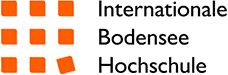 | 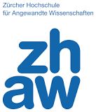 | 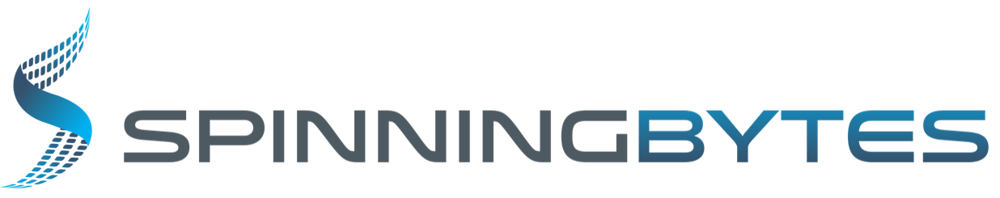 |
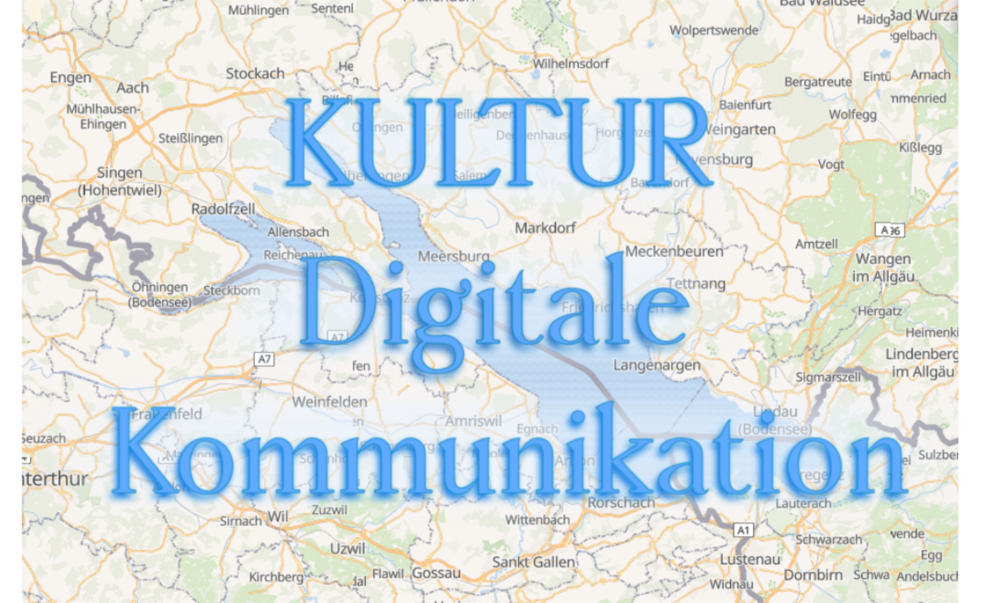
Introduction
We concluded an compelling interdisciplinary project on the topic of digitalization, where we applied a selection of fundamental methods of data science: web scraping, data wrangling with elastic search/kibana juggling, data cleaning, counting, posing questions and searching for answers in the data. We would like to share some results on this blog.
The project was called "DIGITAL COMMUNICATION STRATEGIES FOR THE CULTURAL SECTOR IN THE BODENSEE REGION", in which the data analysis module dealt with the question of how digitalization was actually implemented. This was done using the example of some cultural providers such as museums, galleries, exhibitions and theatres on the region of the Lake Constance. We use in the terms Lake of Constance region and Bodensee region interchangeably this article.
Motivation
A solid indicator of the extent to which cultural services like art festivals, museums and theatres have gone digital is their social media presence. It shows how aware they are of their own image on the Internet and how they actively handling it. With this in mind, a popular social media platform is Instagram.
From a software engineering point of view, this platform is a perfect target since it is easier to access data from there than from Facebook or Twitter, for example, which is a great advantage since, say, the metadata provided is very helpful. Furthermore, data privacy is less concerning here since people know that it will be shared and it is searchable by search engines. We also gathered data which was only available without access restriction.
Instagram is a social network service specialized in images. Every day, 500 million users visit the platform, a total of 1 billion per month, as this link shows. In Germany, Instagram is widely used with around 20 million users and we assume that this is also the case in the Bodensee region.
The exchange between users takes place via so-called posts, which always consist of a picture and a description or caption. Opportunities of further interactions are given since users can leave comments on each post and directly target other users with the "@" sign.
As pointed out earlier, Instagram focuses on images. This limits the possibilities of user posts, since some cultural providers do not allow pictures of the exhibitions or performances to be taken. On the other hand, the the cultural provider's public relations activities and the experience of the visitors up to and after the exhibition/performance can be well documented with photos in the posts. Therefore, we expect that all selected cultural providers are well represented.
Data Collection
First, a list of 210 cultural destinations and places, as well as 48 artists and 102 events relevant to the Lake Constance region was compiled. Then we implemented a software routine to search for and download relevant Instagram posts and the corresponding comments from this list. The downloaded data was then stored in a database. Thus, by the end of July 2019, a total of approximately 300,000 posts had been collected. Unfortunately, #bodensee has more than 1 million post which takes a long time to gather. Thus, we predominantely took data from the months of June and July 2019 and only a very few samples (around 600 posts) from months before that.
Analysis
We noticed that many of the posts were auxiliary ´noise´: For example, a restaurant in Porto Alegre - Brazil - is called "Mainau", thus some posts contain relevant text, but are not directly related to the Lake Constance region. Also Mainau is only conditionally a cultural provider but much more a touristic destination (in total 41.246 posts were connected to Mainau). Although touristism and cultural providers are not mutually exclusive we tried to differentiate here, especially, since including tourism providers would go beyond the scope of the project. So there are relations which could be referred to geographically or thematically, but are not the ones we are searching for. Therefore, we removed many such terms or refined the search with an additional geographical attributes, so that in the end a total of 128,188 posts were used for analysis. Nevertheless, we kept one very large event, namely #bodensee, so that we can make comparisons with the Bodensee region as a whole. Because of the time limitation on this hashtag, we will only discuss timelines relating to the culture providers. Particularly in #bodensee, we expect a high bias towards summer related events and topics. In the analysis, we summarize all searched terms of the list and only speak of searched events, if not explicitly subdivided.
Number of Posts per Event
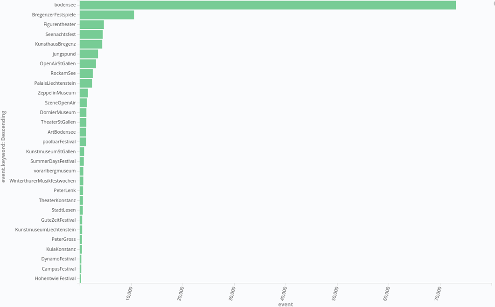
The picture above shows the distribution of posts per event. #bodensee has 73,109 posts and takes the first place, the Bregenz Festival comes second with 10,558 posts. From this, it can be seen that the Bregenz Festival seeks or gets a great deal of publicity and spread, much more than the other searched events. We will come back to this phenomenon later to discuss it in more detail. It is also important to mention that the remaining cultural providers hardly stand out from the others in terms of the number of posts.
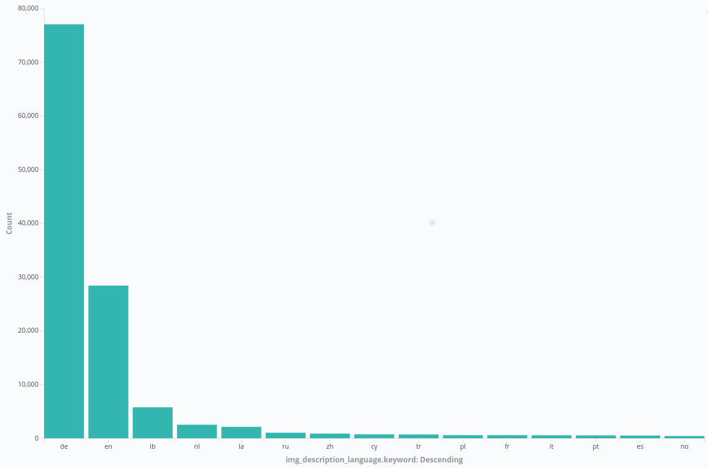
We also plotted the posts per language estimated, which can be very 'noisy' or contain irrelevant data. This allows us to know which tourists visit see the events, although this can only be a very rough estimate. We see "lb" in third place, which mean that many posts were identified as from Luxembourg, which is clearly a misclassification. When looking at these posts we can see that they are from different languages (predominately German). We estimate that the use of "#" and different languages or structures (like using spaces between the characters of a word, e.g. "S O M M E R") make it very difficult to classify correctly a post to the language it belongs to. The graph is also similar when excluding the #bodensee posts from the data.
Geo-Location
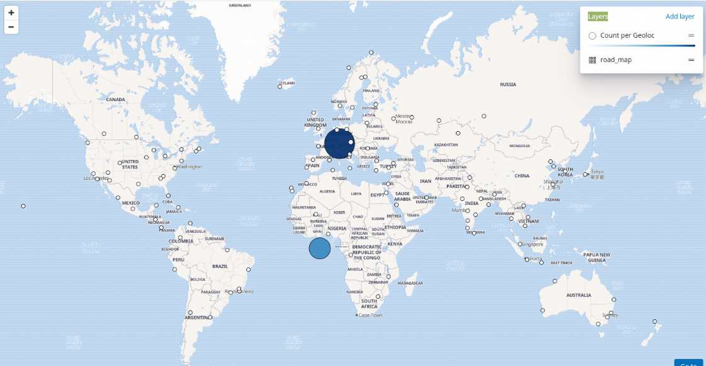
We also plotted the geolocations of the posts against the world map and we can see that many do not have any geolocation data (point on the middle of the map). Also, there are many posts scattered all over the globe. Nonetheless, most of the posts are actually from the Bodensee region.
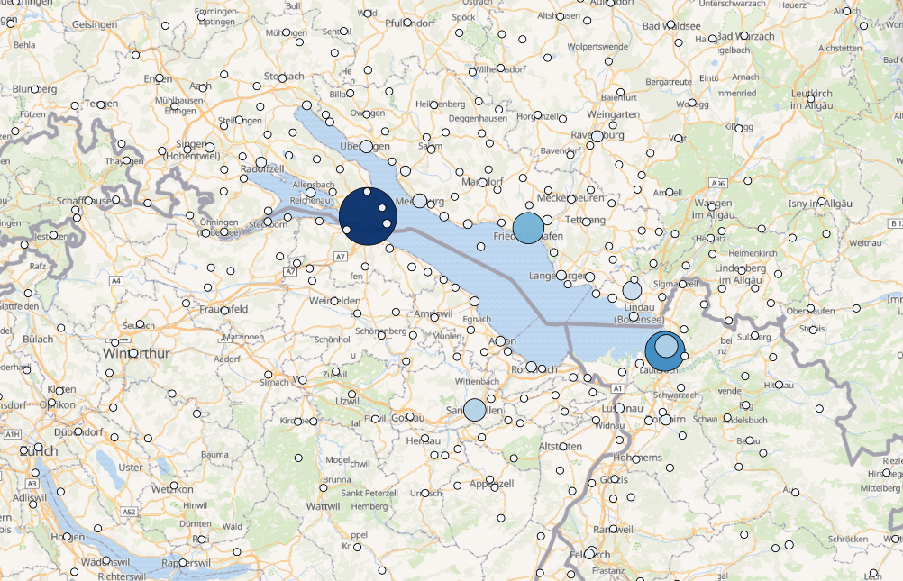
Looking closer, we see that the most posts come from the region of the City of Constance. Bregenz comes second and then Friedrichshafen follows. We also have many posts scattered all over the region.
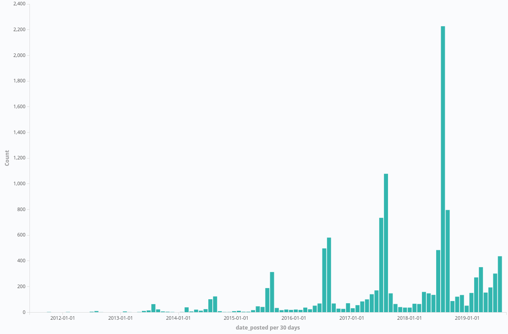
Bregenz Festival is one of the main attractions of the Lake Constance region. As shown earlier, it is also very present on Instagram with over 10,000 posts. The distribution of the posts over time shows that those in the summer have a peak and double every year, with Instagram users increasing almost linearly (Instagram itself gets additionally every year 100 million users: www.statista.com: instagram users ). We also see an increased "activity" in March 2018 and 2019, when comparing to previous years, probably when the target audience starts to organize the summer holidays.
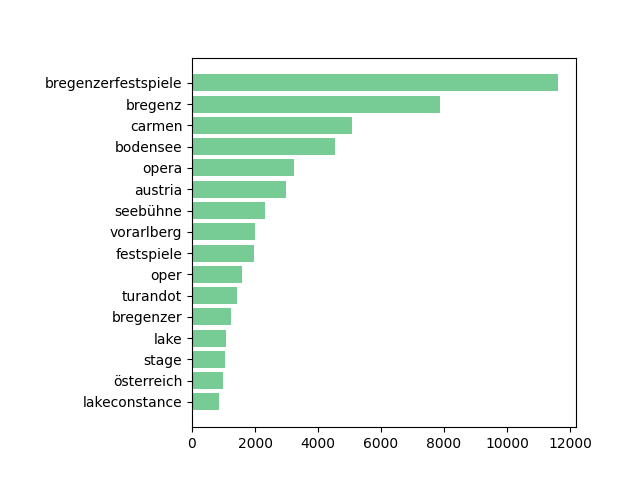
We see the most used words above. It is also interesting to see that we started with German words, but we see many English terms. Here, in such a tourist destination, the question also arises whether a translation of the terms would be insightful, e.g. Lake Constance/lac de Constance, to better capture their opinions. This is particularly so since the Bregenz Festival usually shows Opera or Musicals and some are even in other languages (e.g. French https://bregenzerfespiele.de/.../carmen ).
| Year | Terms |
|---|---|
| 2017 | seebühnebregenz; nice; bühne; bodenseevorarlberg; style; instadaily; evazellhofer; feldkirch; dornbirn; instagram; sagmeister_women; fashion; wow; premiere; beautiful; see; sunset; visitvorarlberg; openair; instagood; music; travel; summer; bregenzerfestspiele2017; amazing; love; 2017; bühnenbild; bregenzfestival; art; lakeofconstance; visitbregenz; georgesbizet; österreich; bizet; lakeconstance; stage; festival; bregenzer; lake; oper; festspiele; vorarlberg; seebühne; austria; opera; bodensee; carmen; bregenz; bregenzerfestspiele |
| Δ2018 | danke; thank; carmenopera; mal; culture; rezasartipizade; de; great; happy; festspielhaus; sommer; 2018; bodenseeliebe; schön; abend |
| Δ2019 | bodenseespargel; erdbeeren; obstambodensee; birne; verdi; bregenzerwald; obstundgemüse; banane; kiwi; rigoletto; kirschen; bodenseeobst; obstvombodensee; kirsche; aprikosen; spargel; clown; kartoffeln; dornbirn; markt; 2019; zitrone; wochenmarkt; kornmarktplatz; apfel; roteshausdornbirn; gemüse; marillen; obst; giuseppeverdi |
In the table above, we see the 50 most used words with #BregenzerFestspiele and the new words added in 2018 and the new one compared to 2018 and 2019, we can already see here that Opera Carmen was in 2018 and Rigoletto in 2019. We can also see a phenomenon here that is called hashtag hijacking. A fruit and vegetable vendor used the hashtag #BregenzerFestspiele in April and May to promote his market.
Museum vs Theatre
Museum
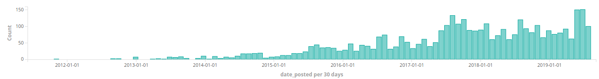
Theatre
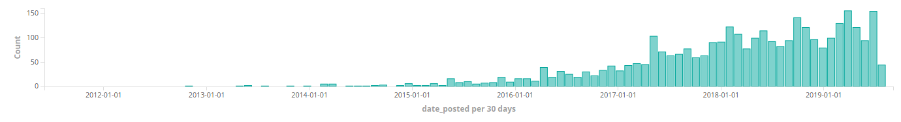
We have also analyzed the data concerning museums and theatres. In the compiled list were 87 museums and 15 theatres. 53 museums were found (i.e. 34 museums were not found), these have 11,205 posts. 8 theatres were found (the other 7 were written in another form or had no posts at all). In total there were 9,571 posts related to theatres. For comparison, the word "theater" was only found in 3,300 posts and "museum" in 3,791, so although fewer theatres were found in the data collection - and generally recordings during the spectacle are prohibited - the presence of theatres was slightly greater in Instagram.
Conclusion
Best Practices Recommendations
Here we have a list of general recommendations to cultural institutions to have an even greater impact on Instagram.
- Invite and otherwise involve Influencers or popular figures ("Super-spreaders") in the community of the cultural institution, if necessary seek interaction with the community with microinfluencer (own staff).
- Use the summer planning season, when people are basically looking for destinations, when possible
- Address Zurich / Munich areas specifically, e.g. with #zürich
-
Engage the audience (e.g. in the form of posts/comments/also using targeting commands such as "@" in instagram/twitter)
- Other approaches to increase the "engagement rate" (sum of all likes to a contribution/follower number x 100) would be, for example, competitions with gifts (such as discount/free entry for best post) or artist "take overs".
- Social media analysis tools can be used to track this data.
-
Link/connect to other popular Instagram accounts, e.g. tourism agencies (also fall under the Super Spreaders):
- https://www.instagram.com/bodensee.de 666 posts 24.9k followers
- https://www.instagram.com/bodenseepage 1,112 posts 15.1k followers
- https://www.instagram.com/unikonstanz 8,526 followers
- https://www.instagram.com/bregenzerfestspiele 8,240 followers
- https://www.instagram.com/Stadt.konstanz 5,951 followers
- https://www.instagram.com/bodensee.eu 5,082 followers
- https://www.instagram.com/Echtbodensee 4,269 followers
- https://www.instagram.com/Thurgaubodensee 4,069 followers
However, these recommendations are not intended to compare or replace a market research and development of a social media strategy. This includes the definition of objectives, target groups, content and added value. For the definition of the target group, classic segmentation and description criteria such as demographics, socioeconomics and psychography can be taken into account or "persona models" from marketing can be used. When defining content and added value, some quality criteria for good content must be also considered. These include the fit with the overall strategy and image of the cultural provider, the wishes and requirements of the target group and the chosen channel. Furthermore, the content should not be too promotional, should offer real added value and interaction potential. Here, culture has an advantage in terms of "instagramability" due to its own content production. For example, it is easy to create aesthetic images of dance performances for Instagram.
Checkout our project at: Digital Transformation in the Cultural and Creative Industries
Thanks to Lina Scarborough for the language proof and comments!